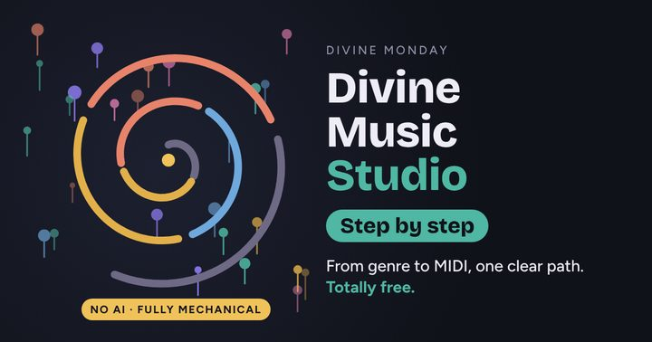
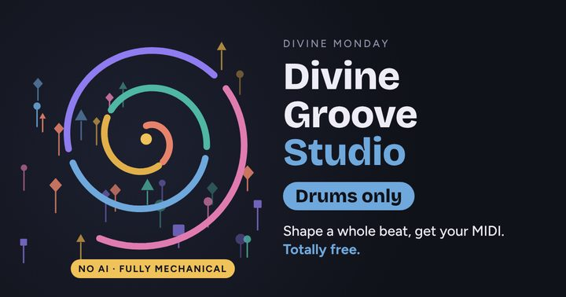
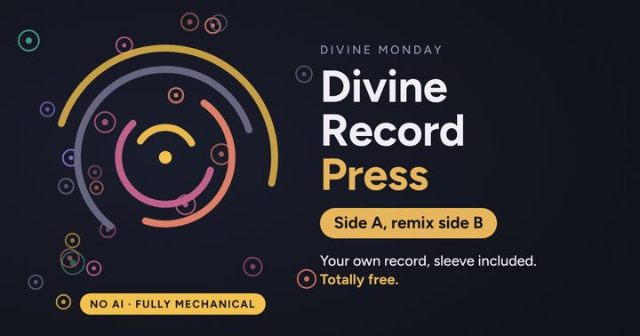
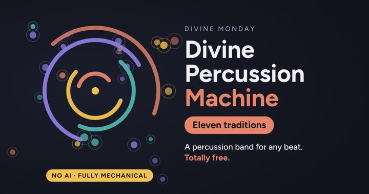
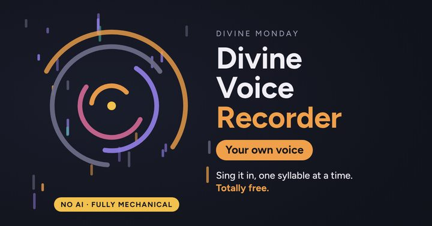
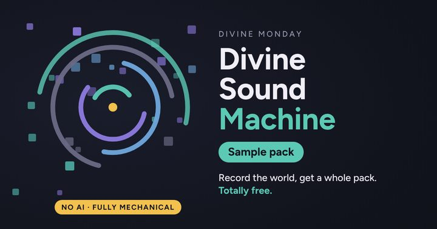

Six tools for making music: songs, beats, records, percussion, your own voice and sample packs. Nothing to install, nothing to pay.

Pick a genre and shape a song step by step: drums, bass, chords and melody, ready as MIDI.
Open
Shape a whole beat step by step and take the drums home as MIDI.
Open
Press your own record: side A, a full remix on side B, and a sleeve drawn from the notes.
Open
A percussion band that plays over any beat, from West Africa and Brazil to Japanese zen.
Open
Sing your own voice into the machine, one syllable at a time. Everything stays on your phone.
Open
Record the world around you and turn it into a complete sample pack.
Open